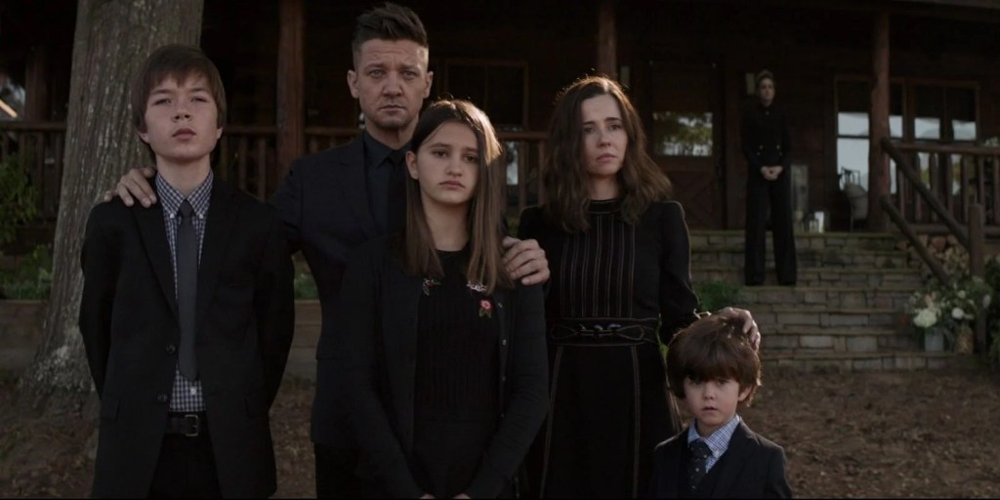
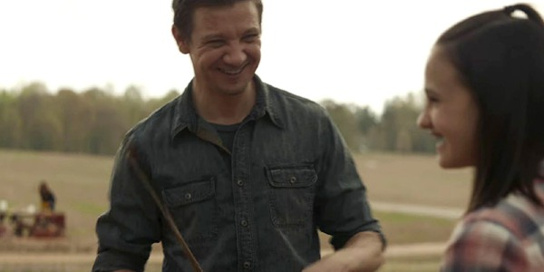

Very little is known about the S.H.I.E.L.D. agent known as Hawkeye or his origins. An accomplished combatant and weapons master, he was present for Thor’s arrival on Earth, and was impressed with the God of Thunder. He was also instrumental in bringing over Natasha Romanoff, AKA Black Widow, to the side of S.H.I.E.L.D, sparing her life and offering her a path to redemption. As one of S.H.I.E.L.D.’s best agents, the World’s greatest marksman, and an Avenger, Hawkeye uses traditional weapons as well as high-tech ones, with a strong affinity for his archery bows. Few humans on the planet compare to Clint Barton when it comes to his astonishing talents in precise marksmanship, fighting, flying, and tactical prowess.
An expert acrobat, military-trained combatant, and master assassin, Barton can stand toe-to-toe with some of the best fighters around. He is also a master tactician and spy—the Avengers face quite a bit of difficulty when Hawkeye works for Loki and turns his plans against them. Hawkeye’s specialized equipment include recurve bows, compound bows, a specialized arrow quiver, speed loader, Busse dagger, a S.H.I.E.L.D.-issued handgun, and collapsible baton. He was out of the game when Captain America lead a mission to Lagos, resulting in Scarlet Witch accidentally killing civilians in a nearby building. When asked how he felt about the Sokovia Accords, which put the Avengers under the oversight of the United Nations, Black Widow replied that Barton was retired. However, heroes like Hawkeye always seem to show up when needed.
